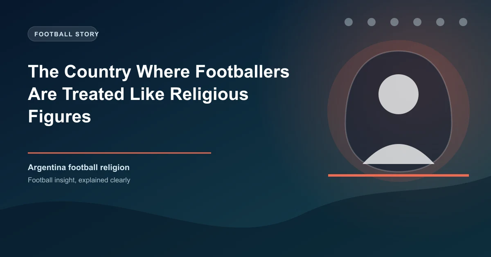

Most football fans around the world would say their club means everything to them. They paint their faces, sing until their voices crack, and spend weekends revolving their lives around fixtures. But in one country, that devotion crosses a line that most people would consider sacred. In Argentina, football doesn't just resemble a religion. For hundreds of thousands of people, it literally is one.
Argentina is home to the Iglesia Maradoniana - the Church of Maradona - a religious movement with over 200,000 registered followers that worships the late Diego Armando Maradona as a living god. They have their own scripture, their own commandments, their own holidays, and their own baptismal rituals. And it all started because one fan wished another a Merry Christmas on the wrong day.
The story of the Iglesia Maradoniana begins in Rosario, Argentina's third-largest city, about 200 miles north of Buenos Aires. On the morning of October 30, 1998 - Diego Maradona's 38th birthday - a sports journalist named Alejandro Veron received an unusual greeting from a friend: "Merry Christmas."
At first, the message didn't make sense. Then it clicked. For a small group of Maradona fans in Rosario, October 30 could only mean one thing: the birth of their Messiah. That same year, Veron along with fellow journalists Hernan Amez and Hector Campomar formally founded the Iglesia Maradoniana. They chose Maradona's birthday as their starting date, marking the beginning of a new calendar era they call D.D. - "Despues de Diego" (After Diego).
"I have a rational religion and that's the Catholic Church," Veron once explained. "And I have a religion passed on my heart and passion, and that's Diego Maradona."
Every religion needs a code, and the Iglesia Maradoniana has its own version of the Ten Commandments. These aren't suggestions. They're the rules that every baptized member of the church vows to follow:
Read those again. These aren't tongue-in-cheek social media posts. People have actually renamed themselves and their children because of a footballer. Walter Rotundo, a church member, named his twin daughters Mara and Dona - a portmanteau of Maradona - and had them baptized in the church when they were just three months old.
The Iglesia Maradoniana follows its own liturgical calendar built entirely around Maradona's career. Two dates stand out above all others:
The night of October 29 into October 30 is celebrated as "Noche Buena Maradoniana" - Maradonian Christmas Eve. Fans gather, drink wine, dance, sing hymns written for Maradona, and pray in front of icons they consider sacred. At midnight, the celebration of Diego's birth begins. The church counts years from 1960, his birth year, meaning 2026 is Year 66 D.D.
This is the holiest day in the Maradonian calendar. It marks the anniversary of the 1986 World Cup quarter-final between Argentina and England - the match where Maradona scored both the "Hand of God" and the "Goal of the Century." June 22 is also the church's official baptism day. The date isn't random: it commemorates what followers consider Maradona's greatest miracle, a moment that united a nation still reeling from a brutal dictatorship and the Falklands War just four years earlier.
Becoming a member of the Iglesia Maradoniana isn't as simple as filling out a form. New members must first swear loyalty to Maradona's autobiography, "Yo soy el Diego de la gente" (I am Diego of the people), which the church considers its Bible.
After that comes the physical test. The prospective member must attempt to re-create the "Hand of God" goal - the infamous 1986 goal where Maradona punched the ball past England's goalkeeper Peter Shilton with his left hand while the referee wasn't looking. Candidates get three attempts. Only those who successfully score are granted baptism.
The ceremony itself involves drinking a small amount of Muscato wine, eating a slice of Neapolitan pizza (a nod to Maradona's beloved years at Napoli), and receiving the official church membership. It's part communion, part sports celebration, and entirely unique to Argentina.
To outsiders, the Iglesia Maradoniana might seem like an elaborate joke or an act of irreverence. But understanding why it emerged in Argentina requires understanding the country's complicated relationship with both religion and hardship.
Argentina has a long tradition of popular Catholicism, where saints aren't distant figures but personal intercessors. Argentines don't just pray to saints - they form intimate spiritual relationships with them. That cultural framework made it possible for Maradona to occupy the same psychological space as a patron saint. As Father Gustavo Morello, a sociology professor at Boston College, explained: "That's why the Maradonian Church became particularly important in Argentina and Italy, where religion can be a very relevant way of expressing social and cultural things."
Then there's the context of Maradona's life itself. Born into extreme poverty in the slums of Buenos Aires, he rose to become the greatest footballer the world had ever seen. He carried the weight of an entire nation on his shoulders and delivered when it mattered most - particularly against England in 1986, a victory that carried the emotional weight of the Falklands War.
"He was someone who would make you smile when there were only two loaves on the table to share among four or five people in the family," Veron recalled. "We Argentines have had a terrible time. We did not have work, we did not have money, but we stood in front of the television, and Diego was there to support us."
Perhaps the most striking element of the Iglesia Maradoniana is their version of the Lord's Prayer, rewritten to honor Maradona. It's recited at every mass:
"Our Maradona who art on the football field, hallowed be thy left hand. Thy magic come. Thy goals will be remembered on earth as it is in heaven. Give us this day your daily magical playing style, and forgive the British as we forgive the Neapolitan Mafia. And lead us not into offside, but deliver us from Joao Havelange and Pele."
Read that alongside the traditional Catholic prayer and you'll notice something important: this isn't mockery. It's devotion expressed in a language the followers understand. The church has been endorsed by Catholic priests who recognized it not as blasphemy, but as "a tribute." As Veron emphasized: "We are not a sect. We did not ask Maradona for work. We did not ask people for tithe."
What started as a small gathering in a Rosario athletic club has grown into a worldwide movement. The Iglesia Maradoniana now claims followers in more than 20 countries, including Spain, Italy, Germany, the United Kingdom, Japan, Afghanistan, Peru, Brazil, Mexico, and the United States. In Spain alone, there are an estimated 9,000 registered followers.
The church's Facebook page has attracted over 180,000 followers, and members regularly organize masses and meetups wherever they can find a venue. The gatherings follow a predictable pattern: readings from the scripture, hymns, and a baptism ceremony if there are new members. They end, as so many Argentine gatherings do, with grilled meat and beer.
Maradona himself never attended a church ceremony in person. But he acknowledged the movement, sent signed shirts and memorabilia to organizers, and even filmed a video thanking fans for "glorifying his name." When he wore the church's official shirt, it was the closest thing to a papal endorsement the Iglesia Maradoniana could have received.
Maradona died on November 25, 2020, at the age of 60. For the Iglesia Maradoniana, his death didn't diminish his divinity - it amplified it. Followers drew explicit parallels to the crucifixion of Jesus, with the barbed-wire-wrapped football (a church relic) taking on the symbolism of Christ's crown of thorns.
"Diego did not die, and he will never die for us," Veron said after Maradona's passing. "On the contrary, he is more alive than ever."
Pope Francis himself released a statement saying he remembered "with affection" the occasions on which he met Maradona. In a country where the pontiff's words carry enormous weight, even the Vatican couldn't ignore the cultural phenomenon that Maradona had become.
The church continues to grow, sustained not by institutional power but by the raw emotional connection that millions of people still feel toward a man who, despite his flaws, gave them hope when they had none. As the Uruguayan writer Eduardo Galeano once wrote: "Maradona has converted into a kind of dirty God, the most human of the gods. This perhaps explains the universal veneration he won, more than any other player."
Argentina isn't the only country where football borders on the sacred. In Brazil, Pele was treated with reverence that approached the divine during his lifetime. In Naples, locals compared Maradona to Saint Gennaro, the city's patron saint, suggesting he was "the second coming." In Liverpool, you'll find chapels where Bill Shankly is spoken of with the same tone other Christians reserve for saints.
But nowhere has this devotion been formalized into an actual religious institution with the structure, rituals, and doctrinal seriousness of the Iglesia Maradoniana. It remains the most literal example of a truth that football fans everywhere understand instinctively: for some people, the game isn't just the most important thing in their lives. It's the thing that gives their lives meaning.
Understanding the depth of football passion in Argentina can give you an edge. Argentine clubs and the national team often perform beyond statistical expectations in high-emotion matches precisely because of this cultural intensity. When Argentina plays at the Estadio Monumental in Buenos Aires, the atmosphere isn't just loud - it's spiritually charged. Keep that in mind when evaluating home advantage in South American qualifiers.
Check our free daily football predictions to apply these strategies.